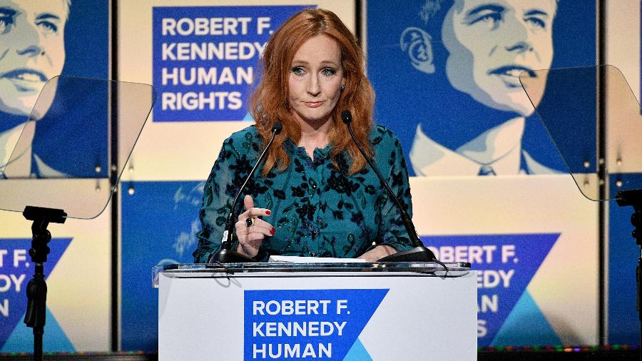

Política
Rowling é conhecida por ter um ponto de vista político de esquerda. Em setembro de 2008, na véspera da Labour Party Conference, Rowling anunciou que havia doado £ 1 milhão a Labour Party e apoiou publicamente o primeiro-ministro Gordon Brown do partido Trabalhista britânico, elogiando as políticas trabalhistas sobre a luta contra a pobreza infantil. Rowling é uma amiga intima de Sarah Brown, esposa de Gordon Brown, que conheceu quando colaborou em um projeto para a One Parent Families.
Rowling discutiu a eleição presidencial dos Estados Unidos de 2008 com o jornal espanhol El País em fevereiro de 2008, afirmando que a eleição teria um efeito profundo sobre resto do mundo. Ela também disse que Barack Obama e Hillary Clinton seriam "extraordinários" na Casa Branca. Na mesma entrevista, Rowling identificou Robert F. Kennedy como seu herói.
Em junho de 2016, Rowling fez campanha contra a saída do Reino Unido da União Europeia, declarando em seu site: "Eu sou um produto mestiço deste continente europeu e sou uma internacionalista. Eu fui criada por uma mãe francófila, cuja família se orgulhava de sua parte francesa. Meus ancestrais franceses viveram na província problemática da Alsácia, que passou centenas de anos sendo anexada pela Alemanha e pela França. Eu morei na França e em Portugal, estudei francês e alemão. Eu amo ter essas múltiplas conexões e associações culturais. Elas me fazem mais forte, não mais fraca. Eu me exulto em associação com as culturas dos meus colegas europeus. Meus valores não estão contidos ou proscritos por fronteiras. A ausência de um visto quando eu cruzo países tem um valor simbólico para mim. Talvez eu não esteja em minha casa, mas eu ainda estou em minha cidade-natal."
Religião
Ao longo dos anos, alguns religiosos, particularmente os cristãos, condenaram os livros de Rowling por supostamente promover bruxaria. Rowling se identifica como cristã, e participava de uma congregação da Igreja da Escócia enquanto escrevia Harry Potter. Sua filha mais velha, Jessica, foi batizada lá. Uma vez ela disse: "Eu acredito em Deus, não em magia", pois acreditava que se os leitores soubessem de suas crenças cristãs, seriam capazes de profetizar seu enredo.
m 2007, Rowling disse que foi educada na Igreja Anglicana. Ela declarou que era a única de sua família que ia regularmente à Igreja. Quando entrou para a escola, a escritora ficou irritada com a "presunção de pessoas religiosas" e passou a adorar com menos frequência. Mais tarde, ela começou a se envolver com uma igreja na Escócia.
Imprensa
Rowling tem tido uma relação difícil com a imprensa. Ela admite ser "sensível" e não gostar da natureza versátil da reportagem. Rowling contesta sua reputação como uma reclusa que odeia ser entrevistada.
Até 2011, Rowling já havia processado a imprensa mais de 50 vezes. No mesmo ano, a Press Complaints Commission confirmou uma queixa da autora sobre uma série de fotografias não-autorizadas dela com sua filha em uma praia de Maurício publicada na revista OK!. Em 2007, o filho caçula de Rowling, David, auxiliado pela escritora e seu marido, perdeu uma briga judicial para banir a publicação de uma fotografia dele. A foto, tirada por um fotógrafo usando lentes de longo alcanço, foi subsequentemente publicada em um artigo da Sunday Express sobre a família e maternidade de Rowling. O julgamento foi anulado em favor de David em maio de 2008.
Pessoas transgênero
Não é de hoje que a escritora J.K. Rowling tem protagonizado polêmicas nas redes sociais. Como uma usuária ativa do Twitter, seus comentários costumam causar algum tipo de controvérsia, esteja ela falando sobre a saga Harry Potter ou dando seus posicionamentos políticos. Na última semana, porém, a autora esteve no centro de um debate intenso sobre transfobia, que envolveu não apenas seus seguidores e fãs, como também membros dos elencos das franquias do Universo Bruxo.
If sex isn’t real, there’s no same-sex attraction. If sex isn’t real, the lived reality of women globally is erased. I know and love trans people, but erasing the concept of sex removes the ability of many to meaningfully discuss their lives. It isn’t hate to speak the truth.
— J.K. Rowling (@jk_rowling) June 6, 2020
No dia 6 de junho de 2020, Rowling tuitou críticas à expressão "pessoas que menstruam", e afirmou que "se o sexo não é real, a realidade vivida pelas mulheres globalmente é apagada. Eu conheço e amo pessoas trans, mas apagar o conceito de sexo remove a capacidade de muitos de discutir suas vidas de forma significativa." O termo "pessoas que menstruam" é utilizado para incluir alguns homens trans e pessoas não-binárias que também menstruam. Os tuítes de Rowling foram criticados pela associação pró-LGBT americana GLAAD, que os chamou de "cruéis" e "anti-trans". Alguns membros do elenco da série de filmes Harry Potter criticaram as opiniões de Rowling ou falaram em apoio aos direitos das pessoas trans, incluindo Daniel Radcliffe, Emma Watson, Rupert Grint, Bonnie Wright, e Katie Leung, assim como o protagonista de "Fantastic Beasts" Eddie Redmayne. A atriz Noma Dumezweni (que interpretou Hermione Granger em Harry Potter e a Criança Amaldiçoada) inicialmente expressou apoio a Rowling, mas voltou atrás após a reação do público.
Em 10 de junho de 2020, Rowling publicou um texto de 3 600 palavras, no seu website, em resposta às críticas. Ela disse que era uma sobrevivente de violência doméstica e violência sexual, e afirmou que "Quando você abre portas de banheiros e vestiários para qualquer homem que acredita ou sente que é mulher (sic)... aí você abre a porta para todo e qualquer homem que quiser entrar", ao mesmo tempo em que afirmou que a maioria das pessoas trans era vulnerável e merecia proteção. Ela também escreveu que muitas mulheres consideram degradantes termos como "pessoas que menstruam".